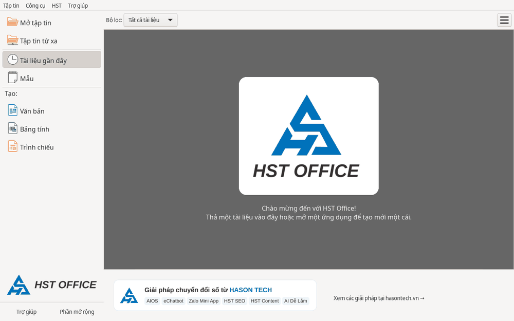

Bắt đầu
Bắt đầu
Từ , bạn có thể tạo tài liệu mới hoặc mở tệp đã có.
Tạo tài liệu mới
- Mở HST Office để đến .
- Trong mục bên trái, bấm , hoặc .

Mở và lưu tệp
- Bấm trên , hoặc chọn (Ctrl+O).
- Chọn tệp bạn muốn làm việc.
- Sau khi chỉnh sửa, chọn hoặc nhấn Ctrl+S.
Bạn cũng có thể chọn tệp trong hoặc kéo thả tệp vào cửa sổ để mở.
HST Office mở và lưu được tệp Word, Excel, PowerPoint. Xem cách chọn định dạng khi lưu.
Các thiết lập ban đầu
- Khổ giấy mặc định là A4; phông mặc định là Times New Roman.
- Giao diện theo thẻ được bật sẵn. Xem cách tìm lệnh và đổi giao diện.
- Giao diện hiển thị tiếng Việt khi hệ điều hành dùng tiếng Việt.
- Kiểm tra chính tả tiếng Việt có sẵn. Từ có gạch chân đỏ là từ nghi sai.
HST Office không cần tài khoản, không cần Internet và không thu thập dữ liệu của bạn.